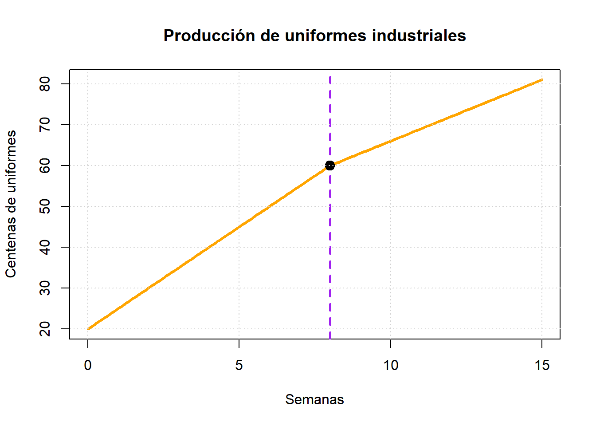
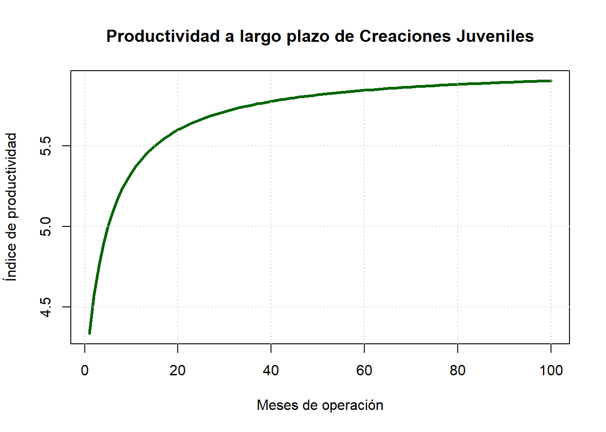

EJERCICIOS DE APLICACIÓN EMPRESA CREACIONES JUVENILES
Author
GRUPO 3
Ejercicio 1: Límite lateral aplicado a pedidos de uniformes
Situación
La empresa implementa una nueva línea de producción de uniformes industriales. La cantidad de uniformes producidos por semana (en centenas de unidades) se modela mediante:
La producción de uniformes de trabajo se aproxima a 6.000 unidades semanales al llegar a la semana 8. Aunque la empresa cambia su método de fabricación en ese momento, la cantidad producida mantiene una transición estable, sin interrupciones ni caídas en la producción. Esto evidencia una planificación eficiente de los procesos operativos.
t <-seq(0,15,0.1)P <-ifelse(t <8,5*t +20,3*t +36)plot(t,P,type="l",lwd=3,col="orange",main="Producción de uniformes industriales",xlab="Semanas",ylab="Centenas de uniformes")abline(v=8,col="purple",lwd=2,lty=2)points(8,60,pch=19,col="black",cex=1.5)grid()

Análisis de la gráfica
La gráfica muestra dos rectas que se unen exactamente en el punto (8,60). Esto demuestra que los límites laterales son iguales y que la producción no presenta saltos cuando se implementa el nuevo proceso de fabricación.
Ejercicio 2: Límite al infinito aplicado al crecimiento productivo
La productividad de Creaciones Juveniles está representada por:
\[I(x)=\frac{6x^2+80x+200}{x^2+15x+50}\]
Donde :
I(x) representa el índice de productividad.
x representa los meses de operación.
La gerencia desea conocer el comportamiento de la productividad cuando la empresa continúa creciendo durante muchos años.
Se desea determinar la productividad a largo plazo de la empresa.
El resultado indica que, conforme transcurre el tiempo y Creaciones Juveniles continúa aumentando su producción de uniformes industriales y corporativos, el índice de productividad tiende a estabilizarse en un valor de 6.
Esto significa que la empresa alcanza un nivel máximo de eficiencia productiva. Aunque la producción continúe creciendo, los incrementos en productividad serán cada vez menores, manteniéndose alrededor de dicho valor. Este análisis permite planificar la capacidad operativa, la inversión en maquinaria y la gestión de recursos a largo plazo.
# Valores de xx <-seq(1, 100, by =1)# FunciónI <- (6*x^2+80*x +200) / (x^2+15*x +50)# Gráficoplot(x, I,type ="l",lwd =3,col ="darkgreen",main ="Productividad a largo plazo de Creaciones Juveniles",xlab ="Meses de operación",ylab ="Índice de productividad")# Asíntota horizontalabline(h =6,col ="red",lwd =2,lty =2)grid()

Análisis de la gráfica
La curva muestra el comportamiento del índice de productividad de Creaciones Juveniles a medida que aumentan los meses de operación. Durante los primeros períodos se observan variaciones importantes; sin embargo, conforme aumenta el tiempo, la curva se aproxima cada vez más a la recta horizontal \[y=6\]La línea roja representa la asíntota horizontal y confirma el valor obtenido mediante el límite al infinito. Esto demuestra que la productividad de la empresa se estabiliza alrededor de 6 unidades de rendimiento, permitiendo prever un comportamiento eficiente y sostenible a largo plazo.(Creaciones Juveniles 2026)